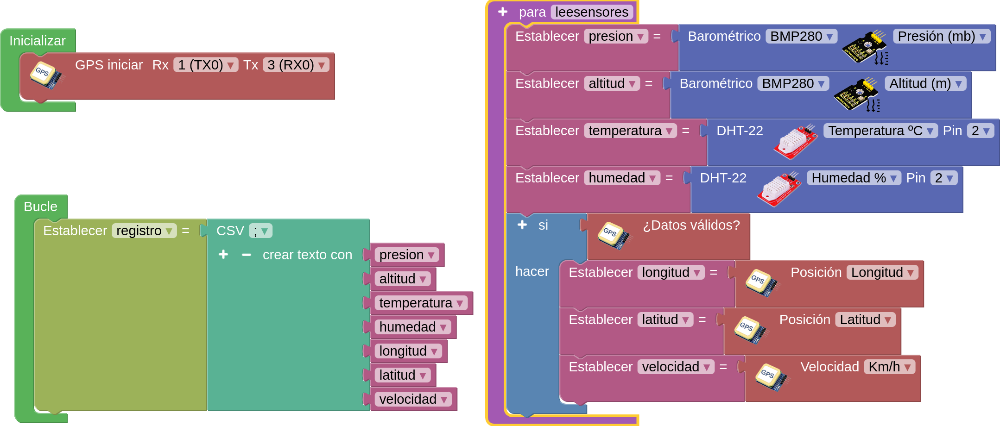

1. Creamos un programa en arduinoblocks, tipo de proyecto ESP32 / WROOM.
2. Implementamos el siguiente código:

3. Vemos el código que genera, que posteriormente lo integraremos en el programa de comunicaciones lora en el emisor. El código que genera es éste:
#include "ABlocks_TinyGPS.h"
#include <HardwareSerial.h>
#include <Wire.h>
#include <Adafruit_BMP280.h>
#include "ABlocks_DHT.h"
double presion;
double altitud;
double temperatura;
double humedad;
double longitud;
double latitud;
double velocidad;
String s_registro;
TinyGPS gps;
float gps_lat=0;
float gps_long=0;
float gps_speed_kmph=0;
float gps_speed_mph=0;
float gps_altitude=0;
float gps_course=0;
bool gps_fixed=false;
byte gps_day=0;
byte gps_month=0;
int gps_year=0;
byte gps_hour=0;
byte gps_min=0;
byte gps_sec=0;
byte gps_hund=0;
HardwareSerial &gps_serial=Serial;
Adafruit_BMP280 bmp280;
DHT dht34(34,DHT22);
void fnc_gps_update()
{
unsigned long fix_age;
while (gps_serial.available()){
if(gps.encode(gps_serial.read())){
gps_fixed=false;
gps_lat=gps_long=gps_speed_kmph=gps_speed_mph=gps_course=0;
gps_day=gps_month=gps_year=gps_hour=gps_min=gps_sec=0;
gps.f_get_position(&gps_lat, &gps_long, &fix_age);
if (fix_age != TinyGPS::GPS_INVALID_AGE && fix_age<5000){
gps_fixed=true;
gps.crack_datetime(&gps_year, &gps_month, &gps_day,&gps_hour, &gps_min, &gps_sec, &gps_hund, &fix_age);
gps_altitude=gps.f_altitude();
gps_course=gps.f_course();
gps_speed_kmph=gps.f_speed_kmph();
gps_speed_mph=gps.f_speed_mph();
}
}
}
}
void leesensores() {
presion = (bmp280.readPressure()/100.0);
altitud = bmp280.readAltitude();
temperatura = dht34.readTemperature();
humedad = dht34.readHumidity();
if (gps_fixed) {
longitud = gps_long;
latitud = gps_lat;
velocidad = gps_speed_kmph;
}
}
void setup()
{
pinMode(34, INPUT);
bmp280.begin(0x76);
bmp280.setSampling(Adafruit_BMP280::MODE_NORMAL,Adafruit_BMP280::SAMPLING_X2,Adafruit_BMP280::SAMPLING_X16,Adafruit_BMP280::FILTER_X16,Adafruit_BMP280::STANDBY_MS_500);
dht34.begin();
gps_serial.begin(9600);
gps_serial.println("$PMTK220,1000*1F");
}
void loop()
{
yield();
fnc_gps_update();
s_registro = String(presion)+String(";")+String(altitud)+String(";")+String(temperatura)+String(";")+String(humedad)+String(";")+String(longitud)+String(";")+String(latitud)+String(";")+String(velocidad)+String(";");
}